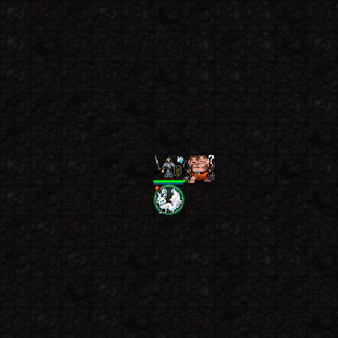
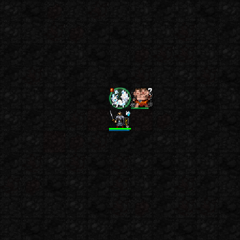

5성 · 백여우 행렬
분신을 최대 넷으로 늘리고 기만·협공을 강화합니다. 현재는 여러 여우 분신이 배치된 모습이 중심입니다.

capture05 실제 SDL 테스트 전투장 캡처. 고정 장비·높은 자원을 사용했고 두 프레임을 느리게 반복합니다. 일반 플레이 영상이나 모든 행동 과정을 담은 영상은 아닙니다. 스이세이·미코·아키는 승인된 최신 버전을 유지합니다.
고정 여우 분신으로 적을 속이고 플레이어 공격에 협공합니다. 신앙75 이상에서는 기본 분신을 둘까지 둘 수 있습니다. 이 장면은 하나를 배치한 모습입니다.

분신과 자리 교환 후 떠난 자리 주변에 여우불 공격. 이 장면은 교환 직후 캡처이며 이동 과정과 공격 전체를 보여주는 영상은 아닙니다.

분신을 최대 넷으로 늘리고 기만·협공을 강화합니다. 현재는 여러 여우 분신이 배치된 모습이 중심입니다.